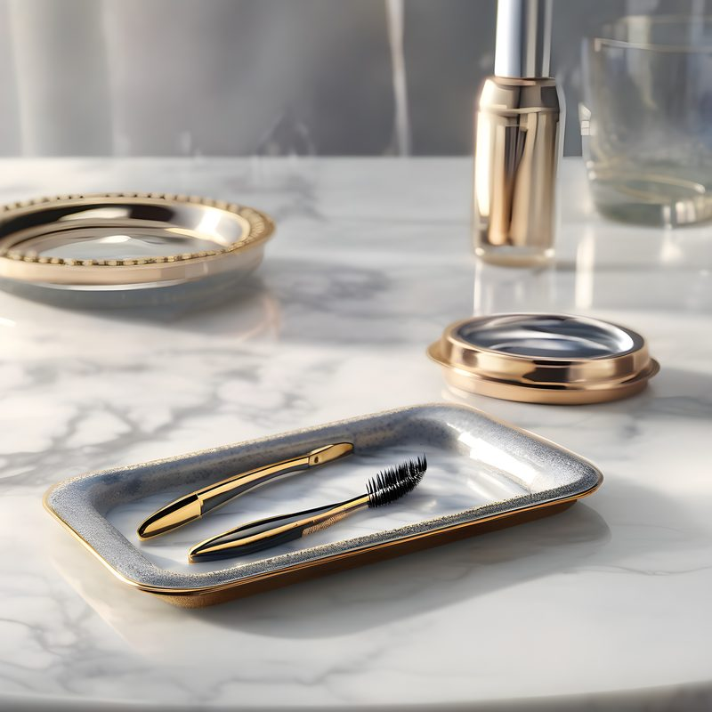
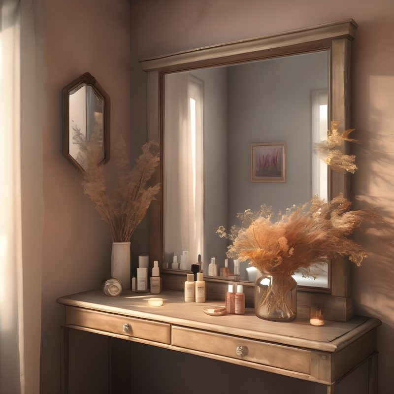
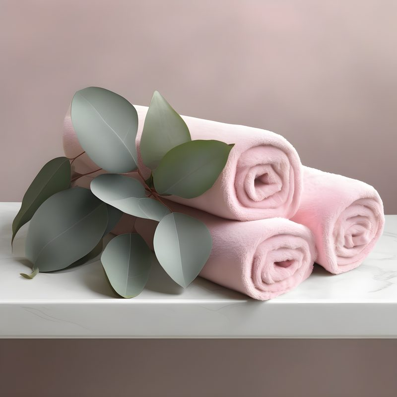

写真はイメージです
顔の形から、
似合う眉の線を。
鈴懸台の眉サロンです。2人で営む完全予約制。最初の15分で顔の形となりたい印象をうかがい、眉の下書きを一緒に決めます。
眉の線ひとつで、
顔の印象は変わる。
同じ「きりっと」でも、丸顔と面長では似合う眉山の位置も角度も違います。lumiでは下書きを鏡で見ていただき、納得してから整えます。
ベッドは2台、仕切りのある半個室。毛抜きが苦手な方は、ワックスだけで仕上げることもできます。
- 森下 紗耶眉の施術歴 9年眉スタイリングとアイブロウラミネーションを担当
- 江藤 みのり眉の施術歴 6年眉ティントの色合わせと、まつげパーマを担当



眉デザイン診断
顔の形と、なりたい印象を選んでください。lumiでよくご提案する眉の形と、合うメニューが出ます。
おすすめの眉の形
ナチュラルアーチ
- 眉山の位置
- 黒目の外側の上
- 太さ
- 今の太さを残す
いまの眉の流れを生かし、眉山の位置だけ外側へ整えます。丸みを少し抑えるだけで、顔がすっきり見えます。
整えた眉は、
投稿で見られます
@lumi_eye


見本のため実在のアカウントはありません
はじめての方から
よく聞かれること
自分で描くと左右がそろわず、毎朝時間がかかっていました。形を整えてもらってからは、なぞるだけで済みます。
どれくらいの間隔で通えばいいですか
4〜6週間ごとが目安です。毛が伸びて形がぼやけてきた頃が整えどきです。
眉を伸ばしてから行くべきですか
2〜3週間ほど抜かずに来ていただくと、選べる形が広がります。抜いたばかりでも大丈夫です。
アイブロウラミネーションとは
眉の毛流れを上向きにそろえて固定する、パーマのようなメニューです。毛が下向きに生えている方、ふんわり立体的な眉にしたい方に向いています。持ちは4〜6週間ほどです。
キャンセルはいつまでですか
前日までにDMかお電話でご連絡ください。当日のキャンセルは料金の50％をいただいています。
お店の場所と予約
- 住所
- 福岡市 鈴懸台2丁目0-0
リーフ鈴懸 2階 - 電話
- 092-000-0000
- 営業時間
- 10:00〜19:00
最終受付 18:00 - 定休日
- 火曜日、第3水曜日
- 駐車場
- 建物裏に1台分（予約時にお知らせください）
- DMかお電話で 希望の日時とメニューをお送りください
- 当日中にお返事 空いている時間をご案内して、予約が確定します
- 前日にご連絡 時間の確認を1通お送りします